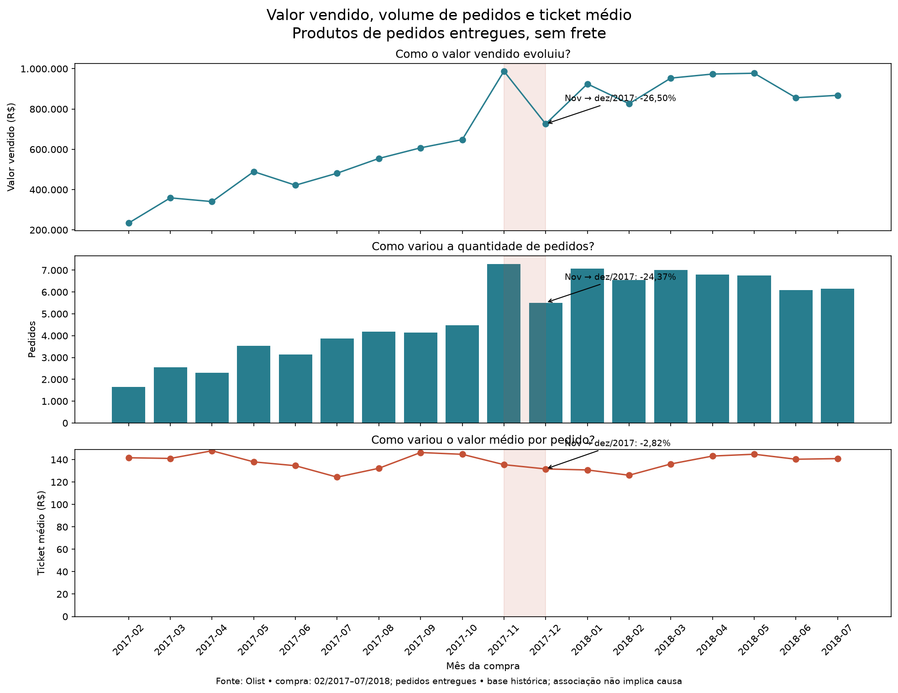
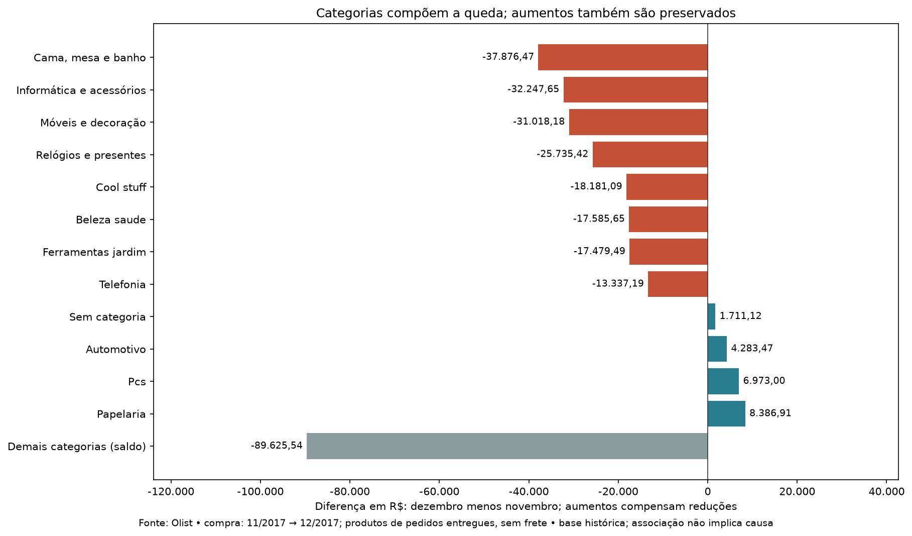
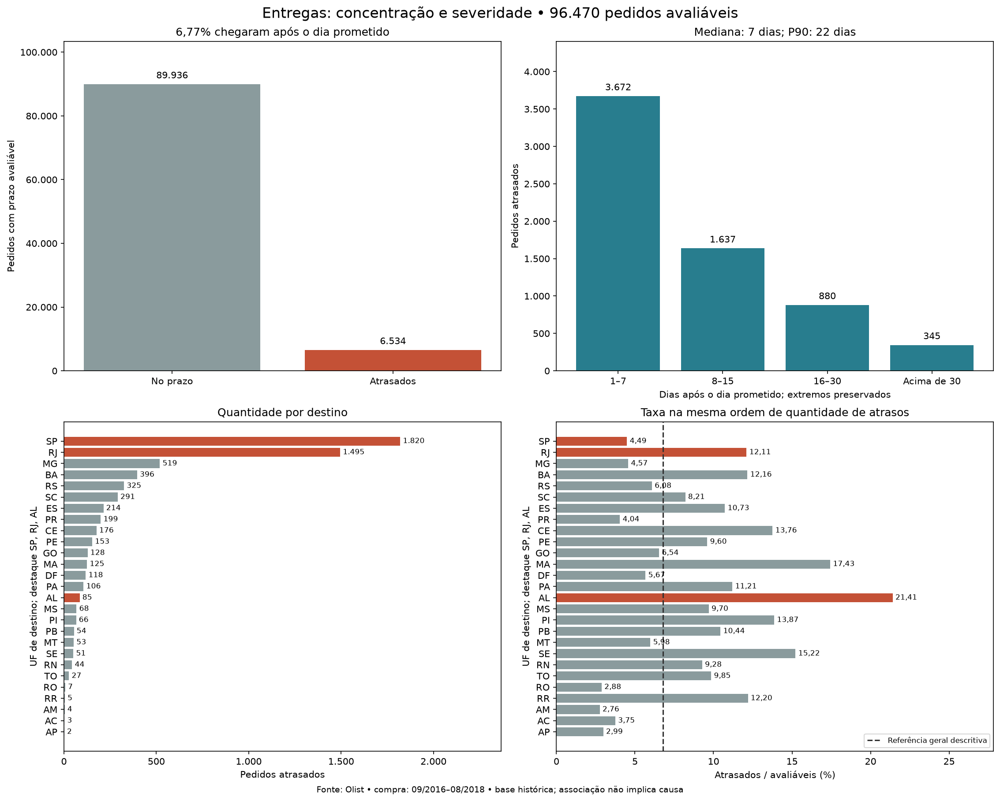
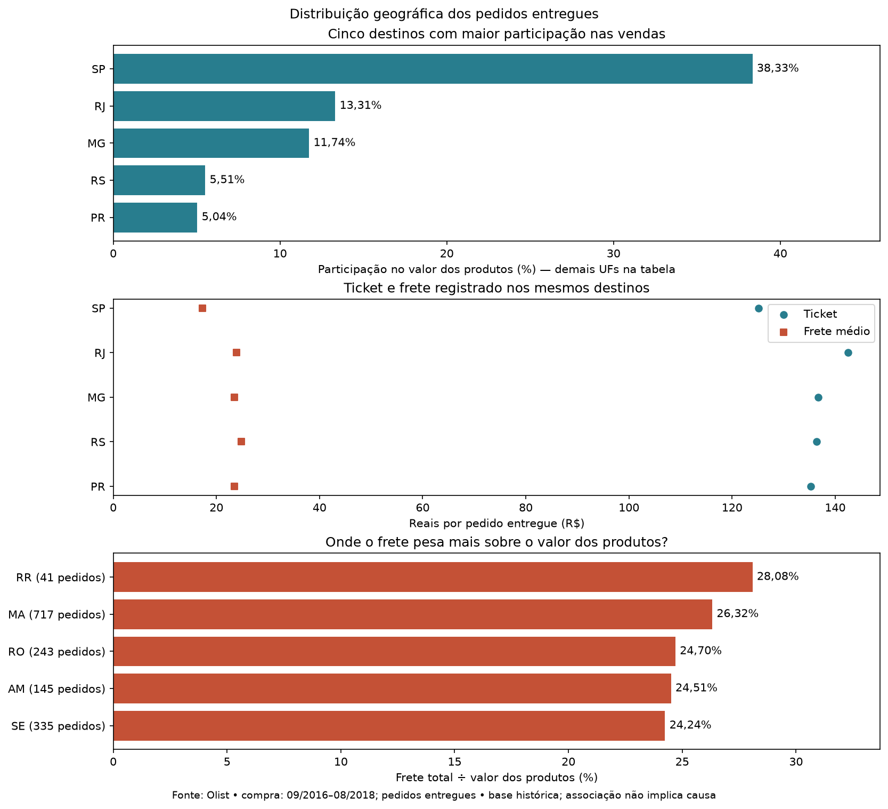
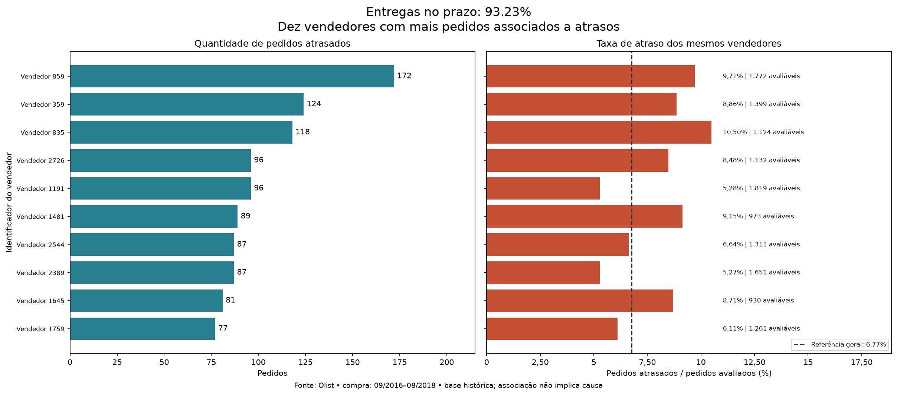
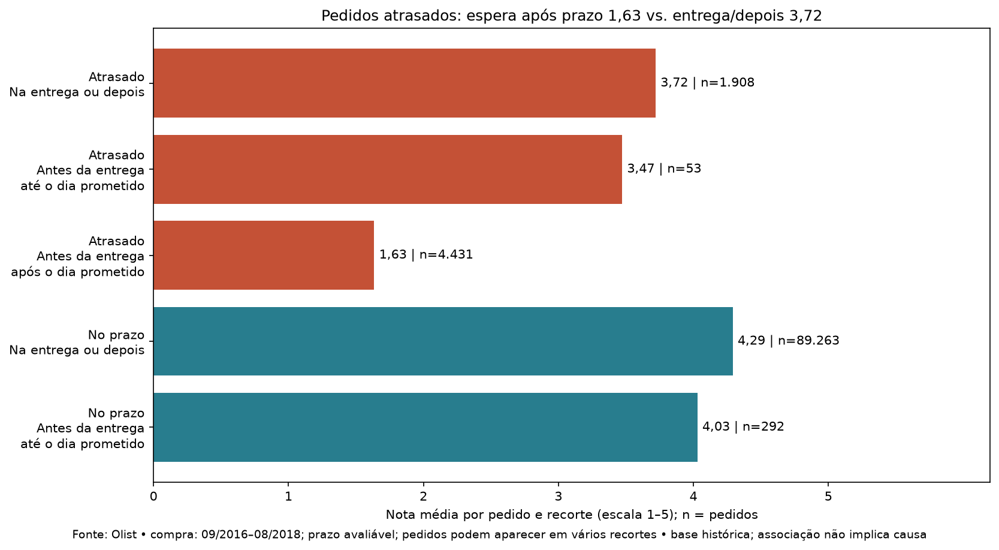
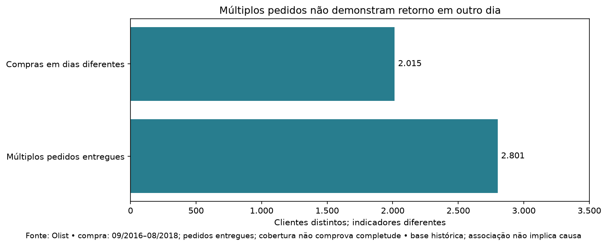
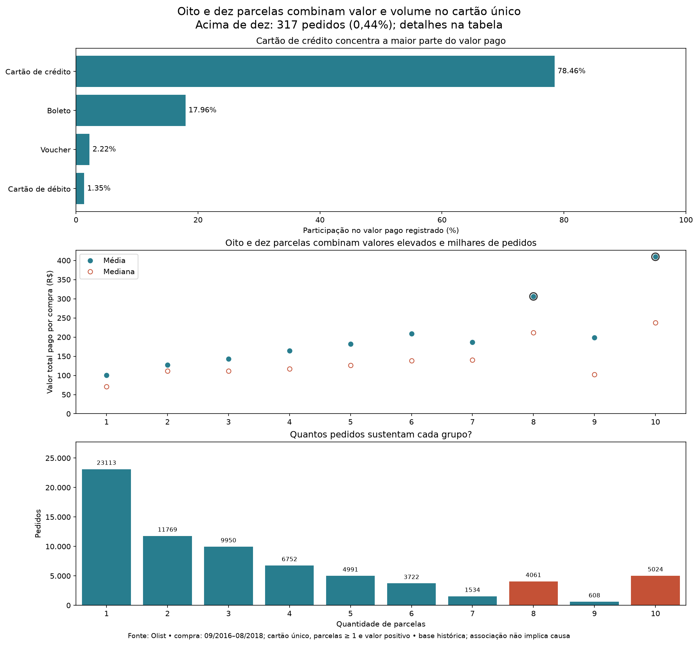

01 / Contexto comercial
Novembro → dezembro de 2017: menos pedidos e menor ticket
Três categorias somam R$ 101.142,30 em reduções, equivalentes a 38,64% da queda líquida de R$ 261.732,18.
Três maiores reduções, ordenadas pela diferença em reais; aumentos compensam parte da queda líquida
| Categoria | Novembro (R$) | Dezembro (R$) | Diferença (R$) | Participacao queda |
|---|---|---|---|---|
| Cama, mesa e banho | 87.957,63 | 50.081,16 | -37.876,47 | 14,47% |
| Informática e acessórios | 69.676,32 | 37.428,67 | -32.247,65 | 12,32% |
| Móveis e decoração | 62.091,27 | 31.073,09 | -31.018,18 | 11,85% |
O valor dos produtos variou -26,50%, os pedidos -24,37% e o ticket -2,82%. O valor vendido é a soma dos preços dos itens entregues, sem frete; não representa lucro ou receita própria da plataforma.

As maiores contribuições negativas vieram de Cama, mesa e banho, Informática e acessórios, Móveis e decoração. A tabela mantém também os aumentos, que compensam parte das reduções. Pedidos com categorias diferentes aparecem em mais de uma categoria e não devem ser somados como exclusivos.
Comparação e identidade do ticket: itens por pedido × preço médio por item
Apoio técnico: primeiras 12 linhas da ordenação original; total 2. Baixar todos os valores calculados (CSV)
| Mês da compra | Valor vendido | Quantidade pedidos | Ticket (R$) | Quantidade itens | Itens por pedido | Preco medio item |
|---|---|---|---|---|---|---|
| 2017-11 | 987.765,37 | 7.289 | 135,51 | 8.475 | 1 | 116,55 |
| 2017-12 | 726.033,19 | 5.513 | 131,69 | 6.187 | 1 | 117,35 |

Todas as contribuições por categoria (R$; dezembro menos novembro)
Apoio técnico: primeiras 12 linhas da ordenação original; total 74. Baixar todos os valores calculados (CSV)
| Categoria | Novembro (R$) | Dezembro (R$) | Diferença (R$) |
|---|---|---|---|
| Cama, mesa e banho | 87.957,63 | 50.081,16 | -37.876,47 |
| Informática e acessórios | 69.676,32 | 37.428,67 | -32.247,65 |
| Móveis e decoração | 62.091,27 | 31.073,09 | -31.018,18 |
| Relógios e presentes | 95.292,34 | 69.556,92 | -25.735,42 |
| Cool stuff | 55.696,66 | 37.515,57 | -18.181,09 |
| Beleza saude | 78.274,40 | 60.688,75 | -17.585,65 |
| Ferramentas jardim | 44.275,18 | 26.795,69 | -17.479,49 |
| Telefonia | 26.117,63 | 12.780,44 | -13.337,19 |
| Moveis escritorio | 17.919,20 | 6.684,37 | -11.234,83 |
| Agro industria e comercio | 13.932,49 | 5.291,70 | -8.640,79 |
| Utilidades domesticas | 33.872,42 | 25.285,96 | -8.586,46 |
| Brinquedos | 62.611,26 | 55.064,56 | -7.546,70 |
Categorias por mês: valores, itens e pedidos que contêm a categoria
Apoio técnico: primeiras 12 linhas da ordenação original; total 1.273. Baixar todos os valores calculados (CSV)
| Mês da compra | Categoria | Valor vendido | Itens | Pedidos com categoria |
|---|---|---|---|---|
| 2016-09 | Beleza saude | 134,97 | 3 | 1 |
| 2016-10 | Sem categoria | 65,89 | 2 | 2 |
| 2016-10 | Alimentos | 79,90 | 1 | 1 |
| 2016-10 | Audio | 156,99 | 2 | 2 |
| 2016-10 | Automotivo | 1.128,26 | 8 | 8 |
| 2016-10 | Bebes | 1.371,17 | 11 | 9 |
| 2016-10 | Beleza saude | 3.439,25 | 40 | 36 |
| 2016-10 | Brinquedos | 4.106,50 | 24 | 22 |
| 2016-10 | Cama, mesa e banho | 478,99 | 8 | 5 |
| 2016-10 | Climatizacao | 1.349,29 | 8 | 4 |
| 2016-10 | Consoles games | 3.619,36 | 7 | 7 |
| 2016-10 | Cool stuff | 1.046,10 | 7 | 7 |
Contexto: fevereiro a julho de 2017 e 2018; poucos ciclos não demonstram sazonalidade
Apoio técnico: primeiras 12 linhas da ordenação original; total 12. Baixar todos os valores calculados (CSV)
| Mês da compra | Valor vendido | Quantidade pedidos | Ticket (R$) |
|---|---|---|---|
| 2017-02 | 234.223,40 | 1.653 | 141,70 |
| 2017-03 | 359.198,85 | 2.546 | 141,08 |
| 2017-04 | 340.669,68 | 2.303 | 147,92 |
| 2017-05 | 489.338,25 | 3.546 | 138,00 |
| 2017-06 | 421.923,37 | 3.135 | 134,58 |
| 2017-07 | 481.604,52 | 3.872 | 124,38 |
| 2018-02 | 826.437,13 | 6.555 | 126,08 |
| 2018-03 | 953.356,25 | 7.003 | 136,14 |
| 2018-04 | 973.534,09 | 6.798 | 143,21 |
| 2018-05 | 977.544,69 | 6.749 | 144,84 |
| 2018-06 | 856.077,86 | 6.099 | 140,36 |
| 2018-07 | 867.953,46 | 6.159 | 140,92 |
Próximo passo: investigar disponibilidade e composição dos produtos nas categorias da queda. A variação observada não comprova mudança do preço do mesmo produto, campanha ou efeito de uma data comemorativa. Abril/julho permanece como exemplo didático nos documentos anteriores.
02 / Frequência e severidade
SP e RJ concentram 50,73% dos atrasos
RJ: fevereiro e março de 2018 reuniram 597 atrasos em 1.743 pedidos avaliáveis (34,25%). O episódio aparece nos dois meses.
Percentil 90: 90% dos atrasados tiveram atraso de até esse número de dias. Agosto/2018 é mês de borda; sua cobertura não comprova um mês completo.
RJ lado a lado: mês da compra
| UF de destino | Mês da compra | Pedidos avaliaveis | Atrasados | Taxa atraso | Mediana | Percentil 90 |
|---|---|---|---|---|---|---|
| Rj | 2018-02 | 879 | 299 | 34,02% | 12,00 | 36 |
| Rj | 2018-03 | 864 | 298 | 34,49% | 11,50 | 28 |
Entre as três etapas dos atrasados do episódio, a maior mediana observada é em Transportador → cliente: 34,14 dias. Duração não identifica a causa do atraso. Medianas de etapas não devem ser somadas.
Intervalos por recorte; grupos sobrepostos, sem soma entre grupos
Apoio técnico: primeiras 12 linhas da ordenação original; total 20. Baixar todos os valores calculados (CSV)
| Recorte | Intervalo | Total pedidos | Validos | Ausentes | Negativos | Mediana dias | Percentil 90 dias |
|---|---|---|---|---|---|---|---|
| Geral | Compra → aprovação | 96.470 | 96.456 | 14 | 0 | 0,01 | 1,44 |
| Geral | Aprovação → transportador | 96.470 | 95.105 | 15 | 1.350 | 1,85 | 6,02 |
| Geral | Transportador → cliente | 96.470 | 96.446 | 1 | 23 | 7,10 | 18,90 |
| Geral | Compra → cliente | 96.470 | 96.470 | 0 | 0 | 10,22 | 23,10 |
| Geral | Compra → promessa | 96.470 | 96.470 | 0 | 0 | 23,23 | 34,29 |
| Rj fev–mar/2018 no prazo | Compra → aprovação | 1.146 | 1.146 | 0 | 0 | 0,01 | 1,20 |
| Rj fev–mar/2018 no prazo | Aprovação → transportador | 1.146 | 1.145 | 0 | 1 | 1,97 | 5,70 |
| Rj fev–mar/2018 no prazo | Transportador → cliente | 1.146 | 1.146 | 0 | 0 | 11,75 | 21,51 |
| Rj fev–mar/2018 no prazo | Compra → cliente | 1.146 | 1.146 | 0 | 0 | 14,42 | 25,50 |
| Rj fev–mar/2018 no prazo | Compra → promessa | 1.146 | 1.146 | 0 | 0 | 26,23 | 36,21 |
| Rj fev–mar/2018 atrasados | Compra → aprovação | 597 | 597 | 0 | 0 | 0,01 | 1,14 |
| Rj fev–mar/2018 atrasados | Aprovação → transportador | 597 | 597 | 0 | 0 | 2,24 | 6,63 |
São 6.534 atrasos entre 96.470 pedidos avaliáveis (6,77%). O atraso compara o dia da entrega ao dia prometido. A mediana entre atrasados é 7 dias e o percentil 90 é 22 dias. Nenhum extremo foi removido.

O maior volume mensal entre SP/RJ está em RJ / 2018-02: 299 atrasos em 879 entregas avaliáveis (34,02%). O mês é sempre o da compra.
Dez episódios com mais atrasos em SP/RJ; taxa e exposição
Apoio técnico: primeiras 12 linhas da ordenação original; total 10. Baixar todos os valores calculados (CSV)
| UF de destino | Mês da compra | Pedidos avaliaveis | Atrasados | Taxa atraso | Mediana | Percentil 90 |
|---|---|---|---|---|---|---|
| Rj | 2018-02 | 879 | 299 | 34,02% | 12,00 | 36 |
| Rj | 2018-03 | 864 | 298 | 34,49% | 11,50 | 28 |
| Sp | 2018-08 | 3.164 | 285 | 9,01% | 3,00 | 8 |
| Sp | 2018-03 | 2.971 | 280 | 9,42% | 5,00 | 16 |
| Rj | 2017-11 | 1.012 | 263 | 25,99% | 10,00 | 27 |
| Sp | 2017-11 | 2.898 | 202 | 6,97% | 5,00 | 27 |
| Sp | 2018-02 | 2.632 | 193 | 7,33% | 7,00 | 19 |
| Rj | 2017-12 | 746 | 179 | 23,99% | 8,00 | 26 |
| Sp | 2018-05 | 3.138 | 136 | 4,33% | 4,00 | 12 |
| Rj | 2018-01 | 850 | 111 | 13,06% | 10,00 | 33 |
Concentração SP/RJ em cada mês: episódios e persistência
Apoio técnico: primeiras 12 linhas da ordenação original; total 23. Baixar todos os valores calculados (CSV)
| Mês da compra | Pedidos avaliaveis | Atrasados | Atrasados sp rj | Participacao sp rj |
|---|---|---|---|---|
| 2016-09 | 1 | 1 | 1 | 100,00% |
| 2016-10 | 265 | 2 | 2 | 100,00% |
| 2016-12 | 1 | 0 | Indisponível | Indisponível |
| 2017-01 | 750 | 22 | 11 | 50,00% |
| 2017-02 | 1.653 | 49 | 26 | 53,06% |
| 2017-03 | 2.546 | 116 | 38 | 32,76% |
| 2017-04 | 2.303 | 151 | 82 | 54,30% |
| 2017-05 | 3.545 | 106 | 71 | 66,98% |
| 2017-06 | 3.135 | 95 | 55 | 57,89% |
| 2017-07 | 3.872 | 108 | 45 | 41,67% |
| 2017-08 | 4.193 | 122 | 50 | 40,98% |
| 2017-09 | 4.150 | 182 | 79 | 43,41% |
Todos os destinos e meses; duração ausente quando não há atraso
Apoio técnico: primeiras 12 linhas da ordenação original; total 556. Baixar todos os valores calculados (CSV)
| UF de destino | Mês da compra | Pedidos avaliaveis | Atrasados | Taxa atraso | Mediana | Percentil 90 |
|---|---|---|---|---|---|---|
| Ac | 2017-01 | 2 | 0 | 0,00% | Indisponível | Indisponível |
| Ac | 2017-02 | 3 | 0 | 0,00% | Indisponível | Indisponível |
| Ac | 2017-03 | 2 | 0 | 0,00% | Indisponível | Indisponível |
| Ac | 2017-04 | 5 | 0 | 0,00% | Indisponível | Indisponível |
| Ac | 2017-05 | 8 | 0 | 0,00% | Indisponível | Indisponível |
| Ac | 2017-06 | 4 | 0 | 0,00% | Indisponível | Indisponível |
| Ac | 2017-07 | 5 | 0 | 0,00% | Indisponível | Indisponível |
| Ac | 2017-08 | 4 | 0 | 0,00% | Indisponível | Indisponível |
| Ac | 2017-09 | 5 | 1 | 20,00% | 24,00 | 24 |
| Ac | 2017-10 | 5 | 0 | 0,00% | Indisponível | Indisponível |
| Ac | 2017-11 | 5 | 1 | 20,00% | 1,00 | 1 |
| Ac | 2017-12 | 5 | 0 | 0,00% | Indisponível | Indisponível |
Severidade: faixas exclusivas e participação nos atrasos
Apoio técnico: primeiras 12 linhas da ordenação original; total 4. Baixar todos os valores calculados (CSV)
| Faixa atraso | Pedidos | Participacao atrasados |
|---|---|---|
| 1–7 | 3.672 | 56,20% |
| 8–15 | 1.637 | 25,05% |
| 16–30 | 880 | 13,47% |
| Acima de 30 | 345 | 5,28% |
Notas por severidade e momento da resposta; média por pedido dentro do recorte
Apoio técnico: primeiras 12 linhas da ordenação original; total 12. Baixar todos os valores calculados (CSV)
| Faixa atraso | Recorte resposta | Pedidos | Registros | Nota média |
|---|---|---|---|---|
| 1–7 | Antes da entrega, após o dia prometido | 1.751 | 1.754 | 1,64 |
| 1–7 | Antes da entrega, até o dia prometido | 24 | 24 | 3,08 |
| 1–7 | Na entrega ou depois | 1.832 | 1.834 | 3,73 |
| 8–15 | Antes da entrega, após o dia prometido | 1.535 | 1.539 | 1,59 |
| 8–15 | Antes da entrega, até o dia prometido | 12 | 13 | 3,83 |
| 8–15 | Na entrega ou depois | 57 | 57 | 3,53 |
| 16–30 | Antes da entrega, após o dia prometido | 834 | 839 | 1,56 |
| 16–30 | Antes da entrega, até o dia prometido | 6 | 6 | 4,50 |
| 16–30 | Na entrega ou depois | 12 | 12 | 3,17 |
| Acima de 30 | Antes da entrega, após o dia prometido | 311 | 313 | 2,00 |
| Acima de 30 | Antes da entrega, até o dia prometido | 11 | 11 | 3,36 |
| Acima de 30 | Na entrega ou depois | 7 | 7 | 2,43 |
Intervalos logísticos (dias); ausências e sequências negativas separadas
Apoio técnico: primeiras 12 linhas da ordenação original; total 3. Baixar todos os valores calculados (CSV)
| Index | Validos | Ausentes | Negativos | Mediana dias | Percentil 90 dias |
|---|---|---|---|---|---|
| Compra → aprovação | 96.456 | 14 | 0 | 0,01 | 1,44 |
| Aprovação → transportador | 95.105 | 15 | 1.350 | 1,85 | 6,02 |
| Transportador → cliente | 96.446 | 1 | 23 | 7,10 | 18,90 |
Investigação: examinar a sequência compra → aprovação → transportador → cliente nos episódios acima e nos casos com mais de 30 dias. Os intervalos não identificam isoladamente um responsável; custo, transportadora e viabilidade ainda precisam ser apurados.
03 / Exposição comercial e logística
Volume, ticket e frete precisam ser lidos juntos
Entre os cinco destinos de maior valor de produtos, RJ, MG, RS, PR combinam essa exposição com taxa de atraso ou proporção de frete acima da referência nacional.
Seleção por valor dos produtos; Brasil calculado pelos totais
| UF de destino | Participacao vendas | Pedidos avaliaveis | Taxa atraso | Ticket (R$) | Frete médio (R$) | Frete percentual |
|---|---|---|---|---|---|---|
| Sp | 38,33% | 40.494 | 4,49% | 125,12 | 17,33 | 13,85% |
| Rj | 13,31% | 12.350 | 12,11% | 142,48 | 23,95 | 16,81% |
| Mg | 11,74% | 11.354 | 4,57% | 136,73 | 23,46 | 17,16% |
| Rs | 5,51% | 5.344 | 6,08% | 136,37 | 24,80 | 18,19% |
| Pr | 5,04% | 4.923 | 4,04% | 135,30 | 23,49 | 17,36% |
| Brasil | 100,00% | 96.470 | 6,77% | 137,04 | 22,79 | 16,63% |
Vendedores: 30.929 de 45.887 células mensais têm um pedido (67,40%). O complemento trimestral usa abril/2017–junho/2018 e dez vendedores selecionados por atrasos, com desempate por base e ID. Referência: demais vendedores da mesma UF/trimestre, sem o próprio vendedor.
Complemento trimestral selecionado; contagens e pares completos no download
Apoio técnico: primeiras 12 linhas da ordenação original; total 869. Baixar todos os valores calculados (CSV)
| ID do vendedor | UF de destino | Trimestre compra | Pedidos avaliaveis | Atrasados | Total | Atrasos total | Pedidos outros vendedores | Atrasados outros vendedores | Taxa atraso | Taxa outros vendedores | Rotulo |
|---|---|---|---|---|---|---|---|---|---|---|---|
| 1f50f920176fa81dab994f9023523100 | Al | 2017q3 | 2 | 0 | 51 | 18 | 49 | 18 | 0,00% | 36,73% | Vendedor 359 |
| 1f50f920176fa81dab994f9023523100 | Al | 2017q4 | 1 | 0 | 66 | 7 | 65 | 7 | 0,00% | 10,77% | Vendedor 359 |
| 1f50f920176fa81dab994f9023523100 | Al | 2018q1 | 1 | 0 | 89 | 31 | 88 | 31 | 0,00% | 35,23% | Vendedor 359 |
| 1f50f920176fa81dab994f9023523100 | Al | 2018q2 | 2 | 1 | 69 | 9 | 67 | 8 | 50,00% | 11,94% | Vendedor 359 |
| 1f50f920176fa81dab994f9023523100 | Ba | 2017q2 | 2 | 0 | 302 | 24 | 300 | 24 | 0,00% | 8,00% | Vendedor 359 |
| 1f50f920176fa81dab994f9023523100 | Ba | 2017q3 | 6 | 0 | 457 | 40 | 451 | 40 | 0,00% | 8,87% | Vendedor 359 |
| 1f50f920176fa81dab994f9023523100 | Ba | 2017q4 | 22 | 4 | 585 | 76 | 563 | 72 | 18,18% | 12,79% | Vendedor 359 |
| 1f50f920176fa81dab994f9023523100 | Ba | 2018q1 | 10 | 2 | 665 | 129 | 655 | 127 | 20,00% | 19,39% | Vendedor 359 |
| 1f50f920176fa81dab994f9023523100 | Ba | 2018q2 | 9 | 1 | 638 | 98 | 629 | 97 | 11,11% | 15,42% | Vendedor 359 |
| 1f50f920176fa81dab994f9023523100 | Ce | 2017q3 | 3 | 0 | 196 | 3 | 193 | 3 | 0,00% | 1,55% | Vendedor 359 |
| 1f50f920176fa81dab994f9023523100 | Ce | 2017q4 | 10 | 2 | 244 | 36 | 234 | 34 | 20,00% | 14,53% | Vendedor 359 |
| 1f50f920176fa81dab994f9023523100 | Ce | 2018q2 | 6 | 2 | 240 | 31 | 234 | 29 | 33,33% | 12,39% | Vendedor 359 |
Distribuição exata do tamanho das células selecionadas
Apoio técnico: primeiras 12 linhas da ordenação original; total 90. Baixar todos os valores calculados (CSV)
| Pedidos avaliaveis | Celulas |
|---|---|
| 1 | 175 |
| 2 | 122 |
| 3 | 82 |
| 4 | 69 |
| 5 | 44 |
| 6 | 50 |
| 7 | 30 |
| 8 | 24 |
| 9 | 23 |
| 10 | 22 |
| 11 | 20 |
| 12 | 15 |
Repetição descritiva acima da referência; sem comprovação estatística
Apoio técnico: primeiras 12 linhas da ordenação original; total 10. Baixar todos os valores calculados (CSV)
| Rotulo | Celulas | Acima referencia | Trimestres |
|---|---|---|---|
| Vendedor 1191 | 104 | 24 | 5 |
| Vendedor 1481 | 91 | 25 | 5 |
| Vendedor 1645 | 68 | 19 | 3 |
| Vendedor 1759 | 71 | 19 | 4 |
| Vendedor 2389 | 107 | 30 | 5 |
| Vendedor 2544 | 72 | 23 | 5 |
| Vendedor 2726 | 80 | 20 | 4 |
| Vendedor 359 | 93 | 28 | 5 |
| Vendedor 835 | 86 | 34 | 5 |
| Vendedor 859 | 97 | 36 | 5 |
A fragmentação e a seleção não sustentam ordenar o desempenho de forma estável; taxas isoladas não identificam os piores vendedores.
Vendas incluem 96.478 pedidos entregues; prazos usam 96.470 com datas válidas. Os oito pedidos sem prazo avaliável permanecem no total comercial. Frete é o valor registrado nos itens, sem evidência de custo logístico da empresa.

Todas as UFs: vendas, frete, ticket, atrasos e exposição
Apoio técnico: primeiras 12 linhas da ordenação original; total 27. Baixar todos os valores calculados (CSV)
| UF de destino | Clientes distintos | Pedidos distintos | Produtos (R$) | Valor frete | Frete percentual | Pedidos avaliaveis | Pedidos atrasados | Taxa atraso | Participacao vendas | Ticket (R$) | Frete médio (R$) |
|---|---|---|---|---|---|---|---|---|---|---|---|
| Sp | 39.156 | 40.501 | 5.067.633,16 | 702.069,99 | 13,85% | 40.494 | 1.820 | 4,49% | 38,33% | 125,12 | 17,33 |
| Rj | 11.917 | 12.350 | 1.759.651,13 | 295.750,44 | 16,81% | 12.350 | 1.495 | 12,11% | 13,31% | 142,48 | 23,95 |
| Mg | 11.001 | 11.354 | 1.552.481,83 | 266.409,84 | 17,16% | 11.354 | 519 | 4,57% | 11,74% | 136,73 | 23,46 |
| Rs | 5.168 | 5.345 | 728.897,47 | 132.575,32 | 18,19% | 5.344 | 325 | 6,08% | 5,51% | 136,37 | 24,80 |
| Pr | 4.769 | 4.923 | 666.063,51 | 115.645,29 | 17,36% | 4.923 | 199 | 4,04% | 5,04% | 135,30 | 23,49 |
| Sc | 3.449 | 3.546 | 507.012,13 | 88.115,65 | 17,38% | 3.546 | 291 | 8,21% | 3,83% | 142,98 | 24,85 |
| Ba | 3.158 | 3.256 | 493.584,14 | 97.553,67 | 19,76% | 3.256 | 396 | 12,16% | 3,73% | 151,59 | 29,96 |
| Df | 2.019 | 2.080 | 296.498,41 | 49.624,94 | 16,74% | 2.080 | 118 | 5,67% | 2,24% | 142,55 | 23,86 |
| Go | 1.895 | 1.957 | 282.836,70 | 51.375,65 | 18,16% | 1.957 | 128 | 6,54% | 2,14% | 144,53 | 26,25 |
| Es | 1.928 | 1.995 | 268.643,45 | 49.014,48 | 18,25% | 1.995 | 214 | 10,73% | 2,03% | 134,66 | 24,57 |
| Pe | 1.551 | 1.593 | 251.889,49 | 57.082,56 | 22,66% | 1.593 | 153 | 9,60% | 1,91% | 158,12 | 35,83 |
| Ce | 1.258 | 1.279 | 219.757,38 | 46.679,39 | 21,24% | 1.279 | 176 | 13,76% | 1,66% | 171,82 | 36,50 |
Próximo passo: confrontar destinos de maior volume com taxa de atraso e proporção de frete antes de priorizar uma investigação. Um cliente pode aparecer em mais de um estado; a soma estadual de clientes não equivale necessariamente ao total nacional distinto.
Vendedores: associação ao atraso, com contexto de destino e período

O recorte complementar com vendedor único exclui 1.275 pedidos multivendedor. As células vendedor × destino × mês mantêm bases pequenas visíveis. Não há ranking ajustado: composição de produtos, operação e responsabilidade não foram controladas.
Correspondência dos rótulos aos IDs completos; todos os vendedores
Apoio técnico: primeiras 12 linhas da ordenação original; total 2.970. Baixar todos os valores calculados (CSV)
| ID do vendedor | Pedidos avaliados | Pedidos atrasados | Taxa atraso | Rotulo |
|---|---|---|---|---|
| 0015a82c2db000af6aaaf3ae2ecb0532 | 3 | 0 | 0,00% | Vendedor 1 |
| 001cca7ae9ae17fb1caed9dfb1094831 | 195 | 12 | 6,15% | Vendedor 2 |
| 002100f778ceb8431b7a1020ff7ab48f | 50 | 9 | 18,00% | Vendedor 3 |
| 003554e2dce176b5555353e4f3555ac8 | 1 | 0 | 0,00% | Vendedor 4 |
| 004c9cd9d87a3c30c522c48c4fc07416 | 156 | 10 | 6,41% | Vendedor 5 |
| 00720abe85ba0859807595bbf045a33b | 13 | 2 | 15,38% | Vendedor 6 |
| 00ab3eff1b5192e5f1a63bcecfee11c8 | 1 | 0 | 0,00% | Vendedor 7 |
| 00d8b143d12632bad99c0ad66ad52825 | 1 | 0 | 0,00% | Vendedor 8 |
| 00ee68308b45bc5e2660cd833c3f81cc | 135 | 10 | 7,41% | Vendedor 9 |
| 00fc707aaaad2d31347cf883cd2dfe10 | 103 | 4 | 3,88% | Vendedor 10 |
| 010543a62bd80aa422851e79a3bc7540 | 2 | 0 | 0,00% | Vendedor 11 |
| 010da0602d7774602cd1b3f5fb7b709e | 1 | 0 | 0,00% | Vendedor 12 |
Comparações por destino e mês: vendedor único e referência da mesma célula
Apoio técnico: primeiras 12 linhas da ordenação original; total 45.887. Baixar todos os valores calculados (CSV)
| ID do vendedor | UF de destino | Mês da compra | Pedidos avaliaveis | Atrasados | Taxa atraso | Rotulo | Pedidos referencia | Atrasados referencia | Taxa referencia |
|---|---|---|---|---|---|---|---|---|---|
| 0015a82c2db000af6aaaf3ae2ecb0532 | Mg | 2017-10 | 2 | 0 | 0,00% | Vendedor 1 | 536 | 5 | 0,93% |
| 0015a82c2db000af6aaaf3ae2ecb0532 | Pr | 2017-09 | 1 | 0 | 0,00% | Vendedor 1 | 174 | 1 | 0,57% |
| 001cca7ae9ae17fb1caed9dfb1094831 | Ba | 2017-06 | 1 | 0 | 0,00% | Vendedor 2 | 103 | 8 | 7,77% |
| 001cca7ae9ae17fb1caed9dfb1094831 | Ba | 2017-08 | 3 | 0 | 0,00% | Vendedor 2 | 148 | 5 | 3,38% |
| 001cca7ae9ae17fb1caed9dfb1094831 | Ba | 2017-09 | 1 | 0 | 0,00% | Vendedor 2 | 165 | 28 | 16,97% |
| 001cca7ae9ae17fb1caed9dfb1094831 | Ba | 2017-10 | 2 | 0 | 0,00% | Vendedor 2 | 155 | 16 | 10,32% |
| 001cca7ae9ae17fb1caed9dfb1094831 | Ba | 2017-11 | 2 | 0 | 0,00% | Vendedor 2 | 242 | 36 | 14,88% |
| 001cca7ae9ae17fb1caed9dfb1094831 | Ba | 2017-12 | 1 | 0 | 0,00% | Vendedor 2 | 188 | 24 | 12,77% |
| 001cca7ae9ae17fb1caed9dfb1094831 | Ba | 2018-01 | 1 | 0 | 0,00% | Vendedor 2 | 226 | 15 | 6,64% |
| 001cca7ae9ae17fb1caed9dfb1094831 | Ba | 2018-03 | 3 | 0 | 0,00% | Vendedor 2 | 231 | 74 | 32,03% |
| 001cca7ae9ae17fb1caed9dfb1094831 | Ce | 2017-05 | 1 | 0 | 0,00% | Vendedor 2 | 61 | 1 | 1,64% |
| 001cca7ae9ae17fb1caed9dfb1094831 | Ce | 2017-09 | 1 | 0 | 0,00% | Vendedor 2 | 73 | 2 | 2,74% |
Exemplos de taxas elevadas com bases pequenas: não são prioridade automática
Apoio técnico: primeiras 12 linhas da ordenação original; total 10. Baixar todos os valores calculados (CSV)
| ID do vendedor | Pedidos avaliados | Pedidos atrasados | Taxa atraso |
|---|---|---|---|
| 1352e06ae67b410cdae0b2a22361167b | 2 | 2 | 100,00% |
| 685b870da5b52a710782c9c0fefbeb5b | 2 | 2 | 100,00% |
| Be1e9e378700cecaa4ebf71433d7915c | 2 | 2 | 100,00% |
| D8dd176509baa37f359644d082bf7f7b | 2 | 2 | 100,00% |
| E5bd51692380fd8cabb19b756b95e714 | 2 | 2 | 100,00% |
| 13d95f0f6f73943d4ceffad0fc2cd32c | 1 | 1 | 100,00% |
| 154bdf805377afea75a3bd158e9eab10 | 1 | 1 | 100,00% |
| 19484c79cef6c062cb177aa4ef2fcc3c | 1 | 1 | 100,00% |
| 1b4b28463457a256e9a784ebe2a8f630 | 1 | 1 | 100,00% |
| 1f2eebc0e970fd3c463e4f5d9652687a | 1 | 1 | 100,00% |
Próximo passo: comparar os vendedores de maior volume dentro do mesmo destino/mês e verificar se os padrões persistem. A entrega final de um pedido multivendedor não revela quem causou seu atraso.
04 / Experiência registrada
Avaliações durante a espera e após o recebimento têm significados diferentes
Entre pedidos finalmente atrasados: nota 1,63 durante a espera após o prazo (4.431 pedidos), contra 3,72 na entrega ou depois (1.908 pedidos).
Grupos diferentes, com pedidos presentes em mais de um recorte. A classificação usa datas registradas; não é comparação antes/depois do mesmo cliente.
Notas de pedidos atrasados: dois momentos de resposta
| Recorte resposta | Pedidos | Registros | Nota média | Cobertura situacao |
|---|---|---|---|---|
| Antes da entrega, após o dia prometido | 4.431 | 4.445 | 1,63 | 68% |
| Na entrega ou depois | 1.908 | 1.910 | 3,72 | 29% |
O detalhamento de severidade mantém a base de cada grupo; poucas avaliações após atrasos acima de 30 dias não sustentam generalização.
A comparação histórica é 4,29 no prazo versus 2,27 atrasados, com uma nota média por pedido. Entre registros associados a atrasados, 70,20% foram respondidos antes da entrega registrada. Esse percentual usa registros, não pedidos.

Comparação histórica: cobertura e média por pedido
Apoio técnico: primeiras 12 linhas da ordenação original; total 2. Baixar todos os valores calculados (CSV)
| Atrasados | Total pedidos | Pedidos com nota | Nota média | Nota mediana | Cobertura avaliacoes |
|---|---|---|---|---|---|
| 0 | 89.936 | 89.443 | 4,29 | 5,00 | 99% |
| 1 | 6.534 | 6.381 | 2,27 | 1,00 | 98% |
Momentos da resposta: registros, pedidos e médias
Apoio técnico: primeiras 12 linhas da ordenação original; total 5. Baixar todos os valores calculados (CSV)
| Atrasados | Recorte resposta | Pedidos | Registros | Nota média | Cobertura situacao |
|---|---|---|---|---|---|
| 0 | Antes da entrega, até o dia prometido | 292 | 295 | 4,03 | 0% |
| 0 | Na entrega ou depois | 89.263 | 89.649 | 4,29 | 99% |
| 1 | Antes da entrega, após o dia prometido | 4.431 | 4.445 | 1,63 | 68% |
| 1 | Antes da entrega, até o dia prometido | 53 | 54 | 3,47 | 1% |
| 1 | Na entrega ou depois | 1.908 | 1.910 | 3,72 | 29% |
Qualidade das datas de avaliação na base completa
Apoio técnico: primeiras 12 linhas da ordenação original; total 3. Baixar todos os valores calculados (CSV)
| Index | 0 |
|---|---|
| Criacao ausente | 0 |
| Resposta ausente | 0 |
| Resposta antes criacao | 0 |
Na base completa, 547 pedidos têm várias avaliações; no recorte de prazo, 123 aparecem em mais de um recorte temporal. A nota é consolidada por pedido dentro de cada recorte. A soma dos pedidos dos grupos pode exceder o total distinto. Registros não classificáveis são preservados.
Próximo passo: examinar avaliações de atrasos severos, distinguindo resposta durante a espera de resposta posterior. A situação final não comprova que o cliente já conhecia o desfecho quando respondeu.
05 / Comportamento de compra
Múltiplos pedidos e recompra observável são indicadores diferentes
978 de 75.387 clientes elegíveis retornaram em outro dia dentro de 90 dias: 1,30%.
Elegíveis têm 90 dias observáveis após a primeira compra entregue observada. Sem referência comparável, a taxa não é classificada como alta ou baixa.
2.801 clientes fizeram múltiplos pedidos entregues; 2.015 compraram em dias diferentes. Entre os primeiros, 786 concentraram todas as compras no mesmo dia.

Até o corte observado em 29/08/2018, 75.387 clientes tinham 90 dias de observação desde a primeira compra entregue observada. 978 voltaram em outro dia dentro de 1–90 dias: 1,30%. Não se exige que a primeira entrega tenha ocorrido antes da segunda compra.
Populações da recompra observada
Apoio técnico: primeiras 12 linhas da ordenação original; total 6. Baixar todos os valores calculados (CSV)
| Index | 0 |
|---|---|
| Clientes | 93.358 |
| Multiplos pedidos | 2.801 |
| Outro dia | 2.015 |
| Elegiveis 90d | 75.387 |
| Recompraram 90d | 978 |
| Taxa 90d | 1 |
Referência histórica de múltiplos pedidos: clientes, pedidos e valores
Apoio técnico: primeiras 12 linhas da ordenação original; total 2. Baixar todos os valores calculados (CSV)
| Recorrente | Clientes distintos | Pedidos distintos | Produtos (R$) | Participacao clientes | Participacao valor | Ticket (R$) | Valor por cliente |
|---|---|---|---|---|---|---|---|
| 0 | 90.557 | 90.557 | 12.493.089,36 | 97,00% | 94,49% | 137,96 | 137,96 |
| 1 | 2.801 | 5.921 | 728.408,75 | 3,00% | 5,51% | 123,02 | 260,05 |
Limite e próximo passo: o status final delivered e a cobertura desigual podem afetar a leitura; a última data não comprova extração completa. Investigar coortes com acompanhamento completo antes de definir ações de retenção. Nenhuma relação entre atraso e recompra foi estimada.
06 / Pagamentos
Parcelamento: quantidade e mediana dão contexto às médias
Relógios e presentes, 8 parcelas: 687 pedidos, 16,01% dos pedidos e 29,04% do valor pago da categoria no complemento.
Maior grupo por valor pago entre oito/dez parcelas, categoria única
| Categoria | Parcelas | Pedidos | Valor pago | Media | Mediana | Participacao pedidos categoria | Participacao valor categoria |
|---|---|---|---|---|---|---|---|
| Relógios e presentes | 8 | 687 | 298.535,90 | 434,55 | 273,47 | 16,01% | 29,04% |
O valor pago pode incluir frete; a participação usa somente o complemento de cartão único e categoria única. Investigar quais produtos compõem essa concentração antes de propor intervenções.
O recorte inclui 71.841 pedidos com pagamento único no cartão, parcelas ≥ 1 e valor positivo. Acima de dez parcelas: 317 pedidos (0,44%).

Formas de pagamento: registros, pedidos e participação no valor
Apoio técnico: primeiras 12 linhas da ordenação original; total 4. Baixar todos os valores calculados (CSV)
| Payment type | Registros pagamento | Pedidos distintos | Valor pago | Participacao valor |
|---|---|---|---|---|
| Credit card | 74.586 | 74.304 | 12.101.094,88 | 78,46% |
| Boleto | 19.191 | 19.191 | 2.769.932,58 | 17,96% |
| Voucher | 5.493 | 3.679 | 343.013,19 | 2,22% |
| Debit card | 1.486 | 1.485 | 208.421,12 | 1,35% |
Todas as quantidades de parcelas, incluindo grupos raros
Apoio técnico: primeiras 12 linhas da ordenação original; total 23. Baixar todos os valores calculados (CSV)
| Parcelas | Quantidade pedidos | Valor medio compra | Valor mediano compra | Participacao pedidos |
|---|---|---|---|---|
| 1 | 23.113 | 100,37 | 71,19 | 32,17% |
| 2 | 11.769 | 127,81 | 111,32 | 16,38% |
| 3 | 9.950 | 142,81 | 111,83 | 13,85% |
| 4 | 6.752 | 164,33 | 117,46 | 9,40% |
| 5 | 4.991 | 182,37 | 126,23 | 6,95% |
| 6 | 3.722 | 209,24 | 138,76 | 5,18% |
| 7 | 1.534 | 186,32 | 139,95 | 2,14% |
| 8 | 4.061 | 306,10 | 211,89 | 5,65% |
| 9 | 608 | 199,11 | 102,56 | 0,85% |
| 10 | 5.024 | 409,53 | 238,05 | 6,99% |
| 11 | 22 | 125,60 | 116,59 | 0,03% |
| 12 | 124 | 327,27 | 199,08 | 0,17% |
A comparação por categoria cobre 71.253 pedidos (99,18% do recorte); exclui 588 multicategoria. Cada pedido contribui uma vez com seu pagamento integral. Não há rateio arbitrário.
Oito e dez parcelas: maiores volumes de valor pago por categoria, com quantidade e participação
Apoio técnico: primeiras 12 linhas da ordenação original; total 12. Baixar todos os valores calculados (CSV)
| Categoria | Parcelas | Pedidos | Valor pago | Media | Mediana | Participacao pedidos categoria | Participacao valor categoria |
|---|---|---|---|---|---|---|---|
| Relógios e presentes | 8 | 687 | 298.535,90 | 434,55 | 273,47 | 16,01% | 29,04% |
| Beleza saude | 8 | 551 | 198.053,87 | 359,44 | 322,89 | 8,44% | 17,89% |
| Automotivo | 10 | 259 | 138.587,45 | 535,09 | 374,93 | 9,26% | 26,78% |
| Cama, mesa e banho | 8 | 682 | 137.259,14 | 201,26 | 164,68 | 9,76% | 14,44% |
| Esporte lazer | 10 | 305 | 134.833,99 | 442,08 | 249,04 | 5,53% | 15,79% |
| Beleza saude | 10 | 338 | 133.519,95 | 395,03 | 309,81 | 5,18% | 12,06% |
| Cama, mesa e banho | 10 | 588 | 127.376,95 | 216,63 | 175,44 | 8,42% | 13,40% |
| Relógios e presentes | 10 | 256 | 116.872,63 | 456,53 | 280,06 | 5,97% | 11,37% |
| Cool stuff | 10 | 280 | 113.753,71 | 406,26 | 250,78 | 10,55% | 21,34% |
| Informática e acessórios | 10 | 234 | 107.566,44 | 459,69 | 212,82 | 5,26% | 15,61% |
| Ferramentas jardim | 10 | 215 | 107.005,72 | 497,70 | 247,32 | 8,94% | 25,47% |
| Móveis e decoração | 10 | 358 | 101.166,63 | 282,59 | 196,96 | 7,99% | 15,77% |
Todas as categorias e parcelas; quantidade, média, mediana e participação
Apoio técnico: primeiras 12 linhas da ordenação original; total 777. Baixar todos os valores calculados (CSV)
| Categoria | Parcelas | Pedidos | Valor pago | Media | Mediana | Participacao pedidos categoria | Participacao valor categoria |
|---|---|---|---|---|---|---|---|
| Sem categoria | 1 | 343 | 31.968,59 | 93,20 | 76,08 | 34,37% | 22,18% |
| Sem categoria | 2 | 206 | 27.696,21 | 134,45 | 138,60 | 20,64% | 19,21% |
| Sem categoria | 3 | 133 | 17.452,41 | 131,22 | 122,88 | 13,33% | 12,11% |
| Sem categoria | 4 | 84 | 11.198,71 | 133,32 | 117,31 | 8,42% | 7,77% |
| Sem categoria | 5 | 64 | 12.070,41 | 188,60 | 121,98 | 6,41% | 8,37% |
| Sem categoria | 6 | 54 | 8.930,71 | 165,38 | 118,68 | 5,41% | 6,19% |
| Sem categoria | 7 | 24 | 3.694,63 | 153,94 | 141,60 | 2,40% | 2,56% |
| Sem categoria | 8 | 43 | 10.786,71 | 250,85 | 188,52 | 4,31% | 7,48% |
| Sem categoria | 9 | 5 | 1.646,21 | 329,24 | 138,17 | 0,50% | 1,14% |
| Sem categoria | 10 | 42 | 18.717,20 | 445,65 | 229,26 | 4,21% | 12,98% |
| Agro industria e comercio | 1 | 40 | 5.305,53 | 132,64 | 84,69 | 33,90% | 10,50% |
| Agro industria e comercio | 2 | 9 | 4.272,86 | 474,76 | 244,48 | 7,63% | 8,46% |
Próximo passo: investigar os produtos que compõem a concentração de oito e dez parcelas já identificada. Maior valor médio é associação observada; não comprova que oferecer mais parcelas aumentará vendas, margem ou conversão.
Três investigações antes de uma decisão operacional
- Logística: começar pelo RJ em fevereiro/março de 2018; obter registros de transporte e ocorrências para explicar diferenças de espera e apoiar a revisão do processo; confrontar volume, taxa e intervalos dos atrasos severos para localizar onde a espera se acumula.
- Comercial: investigar produtos e disponibilidade em Cama, mesa e banho, Informática e acessórios, Móveis e decoração na mudança novembro/dezembro de 2017, preservando categorias que cresceram.
- Experiência: examinar notas durante a espera e após a entrega nos atrasos acima de 30 dias; buscar evidência sobre a jornada antes de formular intervenções.
São prioridades de investigação histórica. Responsabilidade, viabilidade e custo ainda precisam ser apurados. Não há previsão, cenário simulado ou evidência de efeito causal.